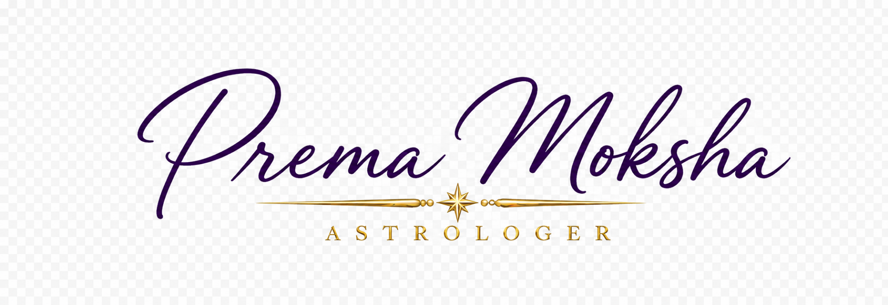

September 28 – October 8, 2026
Weekly Horoscopes by Rising Sign
Horoscopes are not perfect predictions. They are to be understood as a guideline. For people using Placidus, especially those with Rising signs close to the end of a sign, the planets may fall in different Houses than those described here. For more accurate predictions, it is best to have your transits and progressions analyzed for the period.
This week’s synchronicity
Mars in Leo opposes Pluto in Aquarius throughout this period, reaching exact opposition on October 3. This is not a light opposition, and in light of the viral news about the lawsuit against Cornell University, we can already see some of its effects in the collective before it perfects. The opposition became active around the 27th. Mars represents war, conflict, assertion, and action toward what we desire. Leo represents royalty. Since we no longer have royalty in most of the world, it can also represent the elite. A fraternity at an elite university facing public scrutiny over allegations of sexual assault fits the symbolism of this transit.
In our personal lives, one function of the Pluto archetype is to bring what lies deep within the unconscious to light. Its significations include power, control, regeneration, purging, and rebirth. It is also a symbol of great power and great wealth. Pluto in Aquarius, however, is less about a powerful elite and more about the incredible underlying power of the people. Mars in Leo brings our pride to the table; it symbolizes our need to win, to shine, and to be appreciated for our talents. It brings out our self-confidence and energy. The shadow side of this opposition can manifest through authority and the abuse of power.
Within the psyche, an inner struggle may arise between your drive to manifest your will in the world and the will of society, or of a group you belong to. There may be a struggle between your way and the way of others. Oppositions create polarization and usually require mediation to bring both sides toward a consensus.
Mercury enters Scorpio on September 30, forming a fixed sign T-square with Mars and Pluto. Its squares become exact on October 2, with the pattern especially active through October 5 and the Mercury–Mars tension lingering into October 6. Here we have the media, communication, written material, contracts, agreements, and Mercury’s ability to travel from the Underworld to the Heavens. To me, that speaks of his ability to deal with both the shadow and the light of a situation. It may indicate that the Cornell case moves toward some kind of agreement that does not fully satisfy either side of the opposition. Mercury in Scorpio goes deep into an investigation. It wants to know the truth. The T-square may also describe how widely and intensely this investigation is discussed.
As Mercury separates from Mars in Leo, it moves toward Venus, which is stationing retrograde in Scorpio. To me, this suggests a Scorpionic subject involving a woman returning from the past. So yes, I think this subject may continue throughout the week, and there may still be more to come. I was honestly hoping we would have a big revelation concerning the Epstein files, but it may be that the Cornell case has stolen the predictive thunder.
On a personal level, a secret may be revealed that increases the conflict between Mars and Pluto and causes it to escalate. If these transits do not make close contact with your birth chart, you may simply feel extra energy or become more engaged in activities such as sports or competition. Those whose charts are closely activated may feel the effects much more deeply, and Mercury may bring some deep, clarifying conversations to the table.
Mars trines Neptune in Aries on October 2 and sextiles Uranus in Gemini on October 7. Neptune is in Mars’s sign, Aries, and receives an easy trine from Mars in Leo. Mars expresses how we act and pursue what we want. Under this trine, its energetic drive, sometimes accompanied by dramatic flair, may flow more easily toward pleasure, even when that pleasure is not good for us. Neptune can also bring delusion or dissolve a belief we have acted upon with certainty. Because Neptune is associated with intoxication, people who tend toward overindulgence may need to be especially mindful during these days because Mars in Leo and the seeking of joy and pleasure may lead to excess.
The sextile to Uranus is less flowing and may bring disruption through communication, technology, or social media, which are under the umbrella of the significations of Uranus in Gemini. It feels to me that this could be an active week online, with news or exchanges that polarize people once again. In our personal lives, these aspects could show up through group sports, greater use of technology in creative pursuits, or a closer look at our beliefs and what we feel is important to protect.
On October 3, Venus stations retrograde in Scorpio as the Mars–Pluto opposition becomes exact. The Symbolism here is a bit intense since they are a few degrees apart of a T-square that is in fact maintained by Mercury which brings our mental activity and capacity as well as our ability to move through the shadows and the light into the equation and make it more about commerce, regulations, agreements and deals until Venus retrogrades back into the T-square, involving our relationships, finances, sex appeal, feminine sexual power to effect. Venus in retrograde symbolizes the return to a past situation, person, or conflict.
The Sun in Libra opposes Saturn in Aries begins this Thursday, exacting on October 4, adding another polarization that may remain active through October 8. Saturn is uncomfortable in Aries but exalted in Libra, while the Sun is exalted in Aries. Each occupies the sign where the other is exalted, offering some room for understanding despite the opposition. The Sun seeks justice, balance, and agreement; Saturn brings a sobering reality that may demand an independent decision or a firm boundary. In the news or in our personal lives, we may see the wish for fairness to meet the pressure to act. A relationship may need more time or firmer terms than we hoped, but this tension could help us find a more workable agreement if we breathe through the intensity of this week.
Choose Your Rising Sign
Aries RisingSeptember 28–October 8, 2026
Mars in your Fifth House opposes Pluto in your Eleventh, bringing your desire to create, love, play, or be seen into contact with the power of a group. A friendship or community may have expectations about how you should behave, and you may discover how much of yourself you have held back to remain included. There can also be pride on your side of this opposition. If recognition has been missing, even a small disagreement could feel like proof that your contribution does not matter. The question is whether you are defending something you love or fighting for an audience that may never give you what you need.
Mercury in your Eighth House brings trust, intimacy, and shared resources into the T-square. A conflict that appears to be about friends or a creative choice may expose an unspoken debt, a fear of betrayal, or the feeling that someone has more influence over your life than you intended. Venus begins her retrograde in this House, so an old pattern around giving, receiving, or depending on someone may return. You do not have to settle it in the first heated conversation, but you may need to admit that it exists.
The Sun in your Seventh House opposes Saturn in your First, making the reality of a relationship hard to avoid. What can you offer another person without abandoning your own position? Mars trine Neptune in your First may give conviction to your feelings, though it can also make you certain of a story before you know the whole of it. Its sextile to Uranus in your Third could bring an unexpected message or a different way to speak about what has been happening.
Taurus RisingSeptember 28–October 8, 2026
Mars in your Fourth House opposes Pluto in your Tenth. What happens at home, in your family, or within your private emotional life may no longer stay separate from your work and public responsibilities. You may want greater freedom to make decisions about your home, while a professional obligation or a person in authority seems to have too much say. Beneath a practical conflict could be an older question: whose approval have you needed before you could feel secure in the life you are building?
Mercury in your Seventh House makes a partner, client, or close collaborator part of the fixed T-square. The conversation may concern a schedule, a family decision, or the demands of work, yet each person could be defending a different understanding of loyalty. Venus stations retrograde here as well, beginning a longer review of what you expect from commitment and how much room each of you has to change. It may help to distinguish the decision that needs to be made now from the history that gives it such force.
The Sun in your Sixth House opposes Saturn in your Twelfth. You may be doing what needs to be done while concealing how tired you are. Mars trine Neptune in your Twelfth can draw you toward rest or reflection, but it can also make it easier to overlook a real limit. Uranus in your Second may bring a disruption or new idea around income and resources. Let the facts of your situation have a place beside your hopes for what could change.
Gemini RisingSeptember 28–October 8, 2026
Mars in your Third House opposes Pluto in your Ninth, and a conversation may carry more weight than the subject first suggests. You may be arguing about plans, education, travel, or current events while the deeper struggle concerns whose view of the world is allowed to stand. When a belief has helped you make sense of your life, a challenge to it can feel personal. Notice whether you are still exchanging ideas or whether the need to prevail has taken over the exchange.
Mercury and Venus in your Sixth House draw this tension into work and daily care. A sharp conversation could begin with a schedule or an ordinary task, then reveal how often you have had to adjust your life around someone else's needs. Venus retrograde may bring back a pattern of making yourself useful to keep the peace, or a question about whether your routine still supports you. The latest incident matters, but it may not be the whole reason you are angry.
The Sun in your Fifth House opposes Saturn in your Eleventh, placing your desire for pleasure or creative expression beside a responsibility to friends or a group. Mars trine Neptune in your Eleventh may strengthen your faith in a shared purpose, though you may also need to see the group as it is. Uranus in your First can make a change in your own position impossible to ignore. You are allowed to say that you no longer see something the way you once did.
Cancer RisingSeptember 28–October 8, 2026
Mars in your Second House opposes Pluto in your Eighth, bringing the balance between what belongs to you and what is shared into sharper focus. Money may be the visible subject, but the emotional content can involve dependence, control, or the fear of having too little. You may want to assert your ability to provide for yourself while also needing a fair account of what another person contributes or expects. An old experience of insecurity could make the present stakes feel even higher.
Mercury forms the T-square from your Fifth House. A child, a romance, a creative project, or your wish to enjoy life may be part of the financial discussion. Venus stations retrograde in the same House, bringing a longer review of pleasure, desire, and choices made out of love. If you have paid for something with your money, time, or emotional energy without fully agreeing to the cost, this may be the moment to say so. Wanting joy does not make you irresponsible; it does help to be honest about what it requires.
The Sun in your Fourth House opposes Saturn in your Tenth, and professional duties may leave less room for home and family than you need. Mars trine Neptune in your Tenth could renew your sense of calling or make an ambition look more attainable than it is. Uranus in your Twelfth may disturb an old assumption about what you must carry alone. Look at both the practical arrangement and the feeling beneath it before deciding what should change.
Leo RisingSeptember 28–October 8, 2026
Mars in your First House opposes Pluto in your Seventh. You may be ready to assert yourself in a relationship where another person's choices have affected you deeply. A partner or close collaborator may be changing too, and the difference between you can quickly become a struggle over who has the right to decide. Mars in your sign gives you energy and presence, but it can also make a slight feel larger when you have been waiting to be heard. Pluto may reveal the power each person holds over the other's sense of safety or worth.
Mercury and Venus in your Fourth House bring the story into your private life. A conversation at home, or a memory stirred by one, may show how familiar the roles in this conflict are. Venus retrograde begins a review of belonging, family bonds, and the compromises you have made to keep a sense of peace. Perhaps a way of protecting your home once served you well but now leaves little room for the person you have become. That realization deserves time, especially if strong words are already in motion.
The Sun in your Third House opposes Saturn in your Ninth. What you hear and what you believe may not fit together easily this week. Mars trine Neptune in your Ninth can give strength to your convictions, while also making it tempting to defend an idealized view. Uranus in your Eleventh may bring a disruptive perspective from a friend or community. Listen closely, then decide what is yours to stand for.
Virgo RisingSeptember 28–October 8, 2026
Mars in your Twelfth House opposes Pluto in your Sixth. Daily demands may look manageable from the outside while anger, fatigue, or resistance builds where no one can see it. A work situation, health routine, or care obligation could expose how much of your energy has been organized around being dependable. Pluto in the Sixth can make the system itself part of the problem; this is not necessarily something you can solve by trying harder. The feelings you have kept private may tell you where a limit has already been crossed.
Mercury in your Third House forms the T-square, giving those feelings a way into conversation. A colleague, sibling, neighbor, or someone involved in your daily arrangements may hear more than you intended to say. Venus retrograde in the same House invites you to revisit the way you ask for help and the meaning you attach to another person's response. If you have repeatedly said that something is fine when it is not, the pressure may come from that history as much as from this week's exchange.
The Sun in your Second House opposes Saturn in your Eighth, making your resources and shared responsibilities harder to separate. Mars trine Neptune in your Eighth may deepen a bond, but it can also blur what each person has agreed to give. Uranus in your Tenth could disrupt a professional arrangement or reveal another possibility. A clearer account of your time, money, and energy may be more useful than a promise to keep managing everything.
Libra RisingSeptember 28–October 8, 2026
Mars in your Eleventh House opposes Pluto in your Fifth. A friendship, community, or shared cause may claim your energy just as a romance, creative pursuit, or simple pleasure asks to be taken seriously. You might notice an unspoken rule about what you are allowed to want when other people are counting on you. Pluto in the Fifth can make joy feel complicated, especially if being visible or choosing for yourself has brought criticism before. Resentment may show you where belonging has begun to feel conditional.
Mercury and Venus in your Second House bring the question of value into the T-square. What have you contributed to a person or group, and was the exchange understood in the same way by everyone involved? Venus retrograde may revive an old question about money, self-worth, or whether your talents are recognized. A dispute about a payment or commitment could carry the weight of many smaller moments in which you felt overlooked. Make the terms clear, including the value of your time.
The Sun in your First House opposes Saturn in your Seventh. A close relationship may bring you face to face with an obligation or a limit that goodwill alone cannot resolve. Mars trine Neptune in your Seventh may encourage compassion, though it could also make you overlook what is actually being offered. Uranus in your Ninth may unsettle an old belief about what a good partner or friend should do. Fairness has to include you too.
Scorpio RisingSeptember 28–October 8, 2026
Mars in your Tenth House opposes Pluto in your Fourth. A professional ambition or a public decision may press against a family dynamic, a living situation, or the private history you carry into your work. You may want to move forward, yet find that a familiar role at home still claims your attention. Pluto in the Fourth can bring material to the surface that has shaped your sense of safety for a long time. The outer struggle may be about authority; the inner one may concern whether you are allowed to build a life beyond what was expected of you.
Mercury enters your First House and forms the T-square, so what you say and how you say it will matter. A truth you have held back could come out with more force than you anticipated. Venus stations retrograde in your sign, beginning a review of desire, self-image, and the ways you have adapted yourself to be loved or accepted. You may not yet know exactly what you want to change. That does not make what you are feeling any less real, but it gives you a reason to leave room for a conversation to develop.
The Sun in your Twelfth House opposes Saturn in your Sixth, exposing the cost of daily duties when there has been too little private time to recover. Mars trine Neptune in your Sixth may inspire devotion to your work, while also making it easy to give more than you have. Uranus in your Eighth can disturb an arrangement around support or shared resources. Your ambitions deserve conditions in which you can actually live with them.
Sagittarius RisingSeptember 28–October 8, 2026
Mars in your Ninth House opposes Pluto in your Third. A belief, future plan, course of study, or wish to travel may come up against an immediate conversation with someone close to you. You could feel that they are picking apart details while missing what the possibility means to you. Yet the intensity of your defense may reveal how much you have invested in this vision. Pluto in the Third can make words feel powerful enough to threaten the whole plan, even when the other person has raised a question worth hearing.
Mercury and Venus in your Twelfth House suggest that part of this story is unfolding privately. A fear you have not named, a memory, or an attachment to a particular outcome may shape how you interpret what is said. Venus retrograde begins a review of desires you may have set aside or kept hidden, including the wish to be free of an old obligation. If a conversation becomes unusually charged, give yourself time to discover what else it has touched before you respond.
The Sun in your Eleventh House opposes Saturn in your Fifth, bringing a responsibility to friends or a community up against romance, creativity, or time that belongs to you. Mars trine Neptune in your Fifth could make inspiration feel irresistible, though the practical demands still exist. Uranus in your Seventh may bring an unexpected response from a partner or collaborator. They may see something you cannot yet see from where you stand.
Capricorn RisingSeptember 28–October 8, 2026
Mars in your Eighth House opposes Pluto in your Second, and an arrangement involving money, debt, intimacy, or support may need an honest examination. You may insist on your independence while also knowing that you need something from another person. Pluto in the Second can touch a deep fear of losing security or control over your own life. A practical negotiation may therefore stir feelings that have little to do with the amount involved. Notice where help comes with conditions, and where pride makes it difficult to ask for help at all.
Mercury and Venus in your Eleventh House bring friends, networks, or a shared project into the T-square. People may have different ideas about what each one owes the group, even if everyone believed the arrangement was understood. Venus retrograde invites you to reconsider where you feel valued and which connections still reflect your principles. Affection and goodwill matter, but they cannot replace a clear conversation about money, labor, or expectations.
The Sun in your Tenth House opposes Saturn in your Fourth, making the effect of career demands on home and family more visible. Mars trine Neptune in your Fourth may draw you toward an ideal of what home could be, though the present conditions need attention too. Uranus in your Sixth could disrupt a routine or open another way to organize your work. A practical change to your days may give you more room than a dramatic promise about the future.
Aquarius RisingSeptember 28–October 8, 2026
Pluto in your First House opposes Mars in your Seventh. A partner, client, or other important person may want a clear response from you while you are still in the middle of changing. Their urgency could feel like pressure; your need for space could feel like rejection to them. Pluto can make the question of who you are becoming feel too important to compromise, while Mars can make the other person's wishes impossible to ignore. A relationship may reveal its power dynamics precisely when both people believe they are only defending themselves.
Mercury and Venus in your Tenth House draw career, reputation, and public choices into the T-square. A professional conversation could affect a close bond, or a private conflict could reveal different expectations about your ambitions. Venus retrograde begins a review of what recognition means to you and what you have been willing to do to receive it. An opportunity may be real and still require you to question its terms. You do not have to decide that your past goals were false in order to see that they are changing.
The Sun in your Ninth House opposes Saturn in your Third, bringing a larger vision into contact with the details, conversations, and responsibilities needed to make it real. Mars trine Neptune in your Third can make words persuasive, but it may also blur what was actually said. Uranus in your Fifth could interrupt the tension through a creative development, a child, or an unexpected desire. Be clear about what you know, what you hope, and what remains uncertain.
Pisces RisingSeptember 28–October 8, 2026
Mars in your Sixth House opposes Pluto in your Twelfth. Work, care, and the routines that hold your life together may press against feelings you have kept out of sight. You might be doing everything expected of you and still feel anger, exhaustion, or a wish to withdraw. Pluto in the Twelfth can expose a belief that you must endure quietly or prove your value by being useful. The opposition may show where a change in your daily life is needed because an inner limit has already been reached.
Mercury and Venus in your Ninth House bring questions of belief and direction into the T-square. Does the way you spend your days still reflect what matters to you? A conversation about travel, education, faith, or future plans may become more intense because it touches a longing that has had little room in your present routine. Venus retrograde begins a longer review of the ideas and experiences that give your life meaning. You may discover that a path once helped you grow but no longer asks the right things of you.
The Sun in your Eighth House opposes Saturn in your Second, asking you to face shared obligations alongside the limits of your own resources. Mars trine Neptune in your Second could strengthen faith in what you value, but it could also make a financial hope seem more certain than it is. Uranus in your Fourth may disturb an old arrangement at home or reveal a different one. Attend to what is immediately needed, and take seriously what your current pace has been costing you.

Continue with Prema Moksha Astrology
Follow the sky week by week.
The subscription includes weekly transit guidance, Rising Sign horoscopes, deeper astrological articles, and practical context for the cycles unfolding now.
Subscribe on Substack